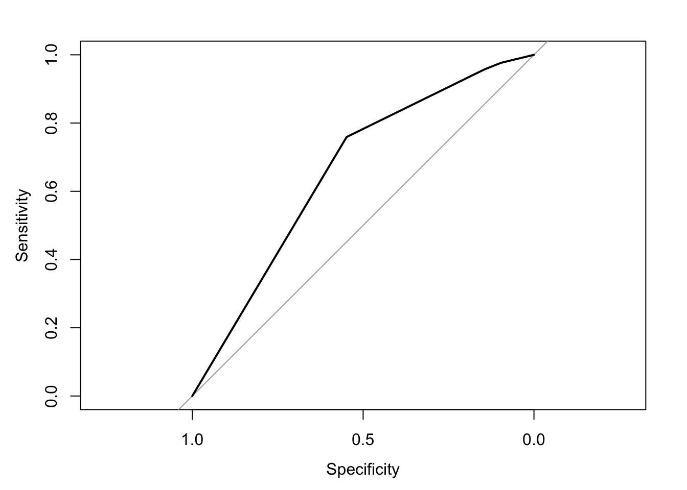
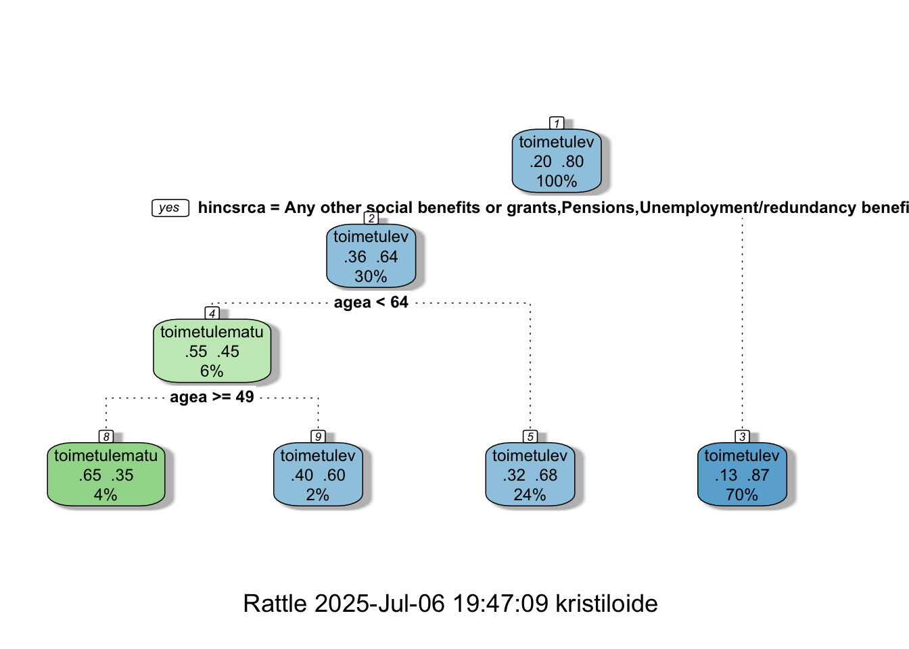
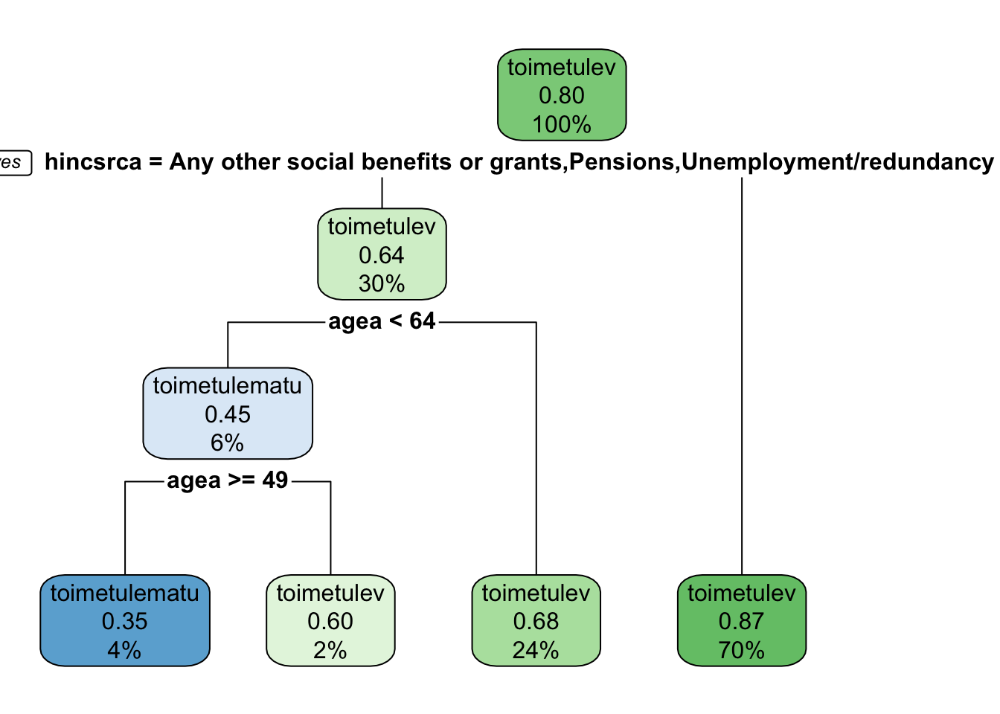
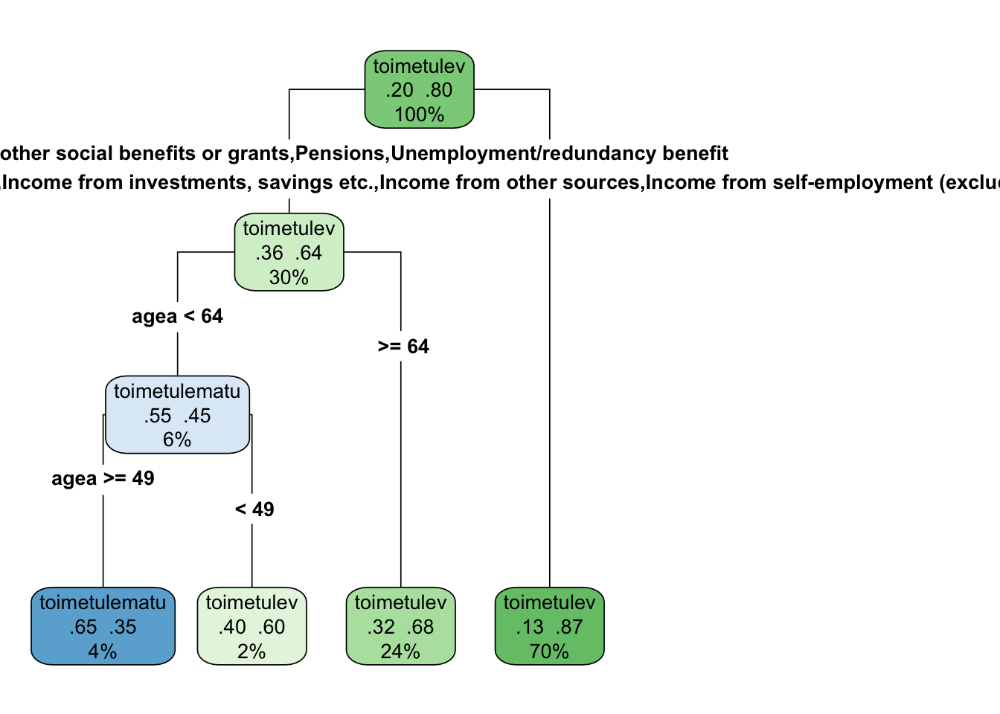
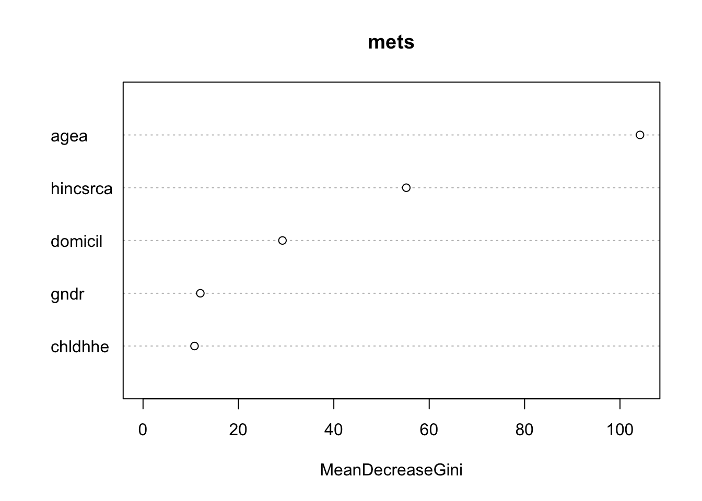

library(tidyverse)18 Masinõpe - otsustuspuud ning metsad
See peatükk annab ülevaate, kuidas masinõppe abil R-is klassifitseerida erinevaid andmeid ja luua otsustuspuid ja -metsa.
Otsustuspuu (decision tree) on masinõppe meetod, mida kasutatakse klassifitseerimiseks või regressiooniks. Klassifitseerimisülesandes püütakse ennustada kategoorilist tulemit (nt kas inimene kuulub ühte või teise gruppi). Regressiooni puhul ennustatakse arvulist väärtust (mitte kategooriat).
18.1 Kasutatavad andmed
Kasutan Euroopa Sotsiaaluuringu andmeid ning andmete töötlemiseks paketti tidyverse (Wickham et al. 2019). Mudeli loomiseks kasutan järgmisi tunnuseid:
- vanus (agea) - numbriline väärtus
- sugu (gndr) - Mees/Naine
- elukoht (domicil) - 5 erinevat kategooriat
- laste olemasolu leibkonnas (chldhhe) - Jah/Ei
- peamine sissetulekuallikas (hincsrca) - 8 erinevat kategooriat
Prognoositav tunnuseks on toimetulek. Kui soovid vaadata andmetöötluse töökäiku, vajuta “code” hallil kolmnurgal.
Code
andmed<-read_csv("ESS9e03_2-ESS10-subset.csv")
# sissetuleku liik
andmed<-andmed|>
mutate(hincsrca=case_when(
hincsrca==1 ~ "Wages or salaries",
hincsrca==2 ~ "Income from self-employment (excluding farming)",
hincsrca==3 ~ "Income from farming",
hincsrca== 4 ~ "Pensions",
hincsrca== 5 ~ "Unemployment/redundancy benefit",
hincsrca == 6 ~ "Any other social benefits or grants",
hincsrca == 7 ~ "Income from investments, savings etc.",
hincsrca == 8 ~ "Income from other sources",
TRUE ~ NA
))
# laste arv leibkonnas
andmed<-andmed|>
mutate(chldhhe=case_when(
chldhhe==1 ~ "Jah",
chldhhe==2 ~ "Ei",
TRUE ~ NA
))
# elukohatüüp
andmed<-andmed|>
mutate(domicil=case_when(
domicil==1 ~ "A big city",
domicil==2 ~ "Suburbs or outskirts of big city",
domicil==3 ~ "Town or small city",
domicil==4 ~ "Country village",
domicil==5 ~ "Farm or home in countryside",
TRUE ~ NA
))
# leibkonna liikmete arv
andmed$hhmmb[andmed$hhmmb > 11] <- NA
# sugu
andmed<-andmed%>%
mutate(gndr=ifelse(gndr==1, "Mees", "Naine"))
# toimetulek
andmed<-andmed%>%
mutate(hincfel=case_when(
hincfel==1 ~ "Elame mugavalt praeguse sissetuleku juures",
hincfel==2 ~ "Saame hakkama praeguse sissetuleku juures",
hincfel==3 ~ "Praeguse sissetuleku juures on raske hakkama saada",
hincfel==4 ~ "Praeguse sissetuleku juures on väga raske hakkama saada",
TRUE ~ NA
))
#Lihtsuse huvides kodeerin veel tunnuse kaheks. Inimesed jaotuvad nüüd toimetulevatekss ja nendeks, kel on oma praeguse sissetuleku juures raske toime tulla.
andmed<-andmed|>
mutate(toimetulek=case_when(
hincfel == "Elame mugavalt praeguse sissetuleku juures" |
hincfel == "Saame hakkama praeguse sissetuleku juures" ~ "toimetulev",
hincfel == "Praeguse sissetuleku juures on raske hakkama saada" | hincfel == "Praeguse sissetuleku juures on väga raske hakkama saada" ~ "toimetulematu"
))Code
levels(andmed$toimetulek)NULLCode
andmed<-andmed%>%
mutate(across(where(is.character), as.factor))Treening- ja testandmestiku loomine
Masinõppes on vaja treeningandmestikku, mille peal mudelit treenida ning seejärel testandmestikku, et mudeli paikapidavust testida. Teen esmalt treeningandmestiku, kus võtan põhiandmestikust 75% andmeid. Kasutan selleks käsku sample_frac(). Korduvate tulemuste saamiseks sean nn pidepunkti käsu set.seed() abil.
set.seed(1234)treening <- andmed|>
sample_frac(0.75) Seejärel loon testandmestikku, võttes käsuga anti_join() andmestikust ülejäänud 25% andmetest, mis pole treeningandmestikus.
test<-andmed|>
anti_join(treening, by="idno")Nüüd on otsustuspuu mudeli jaoks olemas sobiv treening- ja testandmestik.
18.2 Otsutuspuu töö põhimõte
Otustuspuu mudel treenitakse valmis treeningandmestiku peal. Otsustuspuu jagab andmestiku järjestikuste valikute abil harudeks, mis põhinevad seletavatel tunnustel. Need hargnemiskohad on nn “sõlmed” (nodes). Igas “sõlmes” otsustab mudel, milline tunnus ja milline väärtus võimaldab kõige paremini eristada klasse.
Puu algab kõigi andmetega. Mudel otsib sellelt tasemelt parima tunnuse, mis jagab andmed kõige puhtamalt kaheks (ehk mille alusel inimesed jaotuvad toimetulevateks ja mitte-toimetulevateks kõige selgemini eristuvamalt). Tekib esimene “sõlmpunkt”, kus tehakse esimene hargnemine. Seejärel kordub igas harus sama kuni kõik andmed on jaotunud või kui hargnemistele seatud piirangud on saavutatud.
Mudeli tugevused:
- Lihtne tõlgendada (inimloetav struktuur)
- Mudel saab hakkama nii numbriliste kui ka kategooriliste andmetega
- Mudel ei vaja andmete standardiseerimist
- Mudeliga saab avastada mittelineaarseid seoseid
Otsustuspuu mudeli headust hinnatakse testandmestiku abil.
Mudeli puudused:
- Üleõppimise (overfitting) oht – puu võib õppida pähe müra või ebaolulisi mustreid
- Väikeste muutuste korral andmestikus võib puu struktuur drastiliselt muutuda
Otsustuspuu kvaliteedi (usaldusväärsuse) määramisel tuleb vaadata mudeli ennustustäpsust, üldistamisvõimet ja lihtsust. Kui treeningandmetel on mudeli täpsus väga kõrge (nt 95%) ja testandmetel madal (nt 70%), on tegemist üleõppimisega (overfitting).
Üldistusvõimet saab hinnata (area under the curve) ehk AUC näita abil.
- AUC > 0.5 = nõrk, pigem juhuslik jaotus
- AUC > 0.7 = aksepteeritav
- AUC > 0.8 = hea
- AUC > 0.9 = väga hea
Mudeli headuse hindamiseks tasub vaada kui täpselt (accuracy) mudel suudab ennustada. See tähendab, et kui palju on õigeid ja valesid ennustusi. Vaatama peaks ka kui tundlik (sensitivity) mudel on ehk kui hästi mudel tuvastab neid, kes ei tule toime ning kui kui hästi mudel tunneb ära need, kes tulevad toime. Esmalt teeme aga mudeli ja siis testime mudelite headust.
18.3 Otsustuspuu paketiga rpart
library(rpart)Otsustuspuu mudelit on võimalik luua paketi rpart (Therneau and Atkinson 2025) käsu rpart() abil. Esmalt on vaja öelda prognoositav tunnus ning seejärel pärast tildet (~) lisada seletavad tunnused, mida mudelis kasutada.
Salvestan mudeli eraldi objekti nimega “puu”.
puu<-rpart(toimetulek ~ agea + gndr + domicil + chldhhe + hincsrca,
1 data = treening,
2 method = "class")- 1
- Otsuspuu mudeli jaoks kasutame treeningandmestikku.
- 2
- Määran ära mudeli tüübi ehk klassifitseerimise
Mudeli tulemuste tõlgendamine
puun= 2584
node), split, n, loss, yval, (yprob)
* denotes terminal node
1) root 2584 520 toimetulev (0.2012384 0.7987616)
2) hincsrca=Any other social benefits or grants,Pensions,Unemployment/redundancy benefit 786 286 toimetulev (0.3638677 0.6361323)
4) agea< 63.5 156 70 toimetulematu (0.5512821 0.4487179)
8) agea>=48.5 96 34 toimetulematu (0.6458333 0.3541667) *
9) agea< 48.5 60 24 toimetulev (0.4000000 0.6000000) *
5) agea>=63.5 630 200 toimetulev (0.3174603 0.6825397) *
3) hincsrca=Income from farming,Income from investments, savings etc.,Income from other sources,Income from self-employment (excluding farming),Wages or salaries 1798 234 toimetulev (0.1301446 0.8698554) *Saame objekti, mis kirjeldab meile kogu puu ära. Vaatama peab mida parasjagu mudel ennustab, kas toimetulekut või toimetulematust. Puu lõpp-sõlm on tähistatud tärniga (*).
Tulemuste tõlgendamine:
- Puu juur (root ehk väljatrükis rida, mis algab
1)) ehk esimene hargnemine prognoosib toimetulekut. Treeningandmestik jaotab 20,1% toimetulematuteks ning 79,8% toimetulevateks. Esimene hargnemine tehakse sissetulekuliigi (tunnus hincsrca) järgi.
Otsustuspuu mudeli testimine
Mudelit headust testin testandmestiku peal. Esmalt kasutan käsku predict(), et ennustada mudeli abil.
predict()on funktsioon, mis võimaldab olemasoleva mudeli (siin näitespuu) abil teha ennustusi uute andmete kohta.newdata = testütleb, et ennustused tehakse andmestikutestridade kohta, kasutades samu tunnuseid (vanus, sissetulek, varasemad_probleemid), mis mudeli loomiselgi.type = "prob"määrab, et tagastatakse iga klassi tõenäosused, mitte lihtsalt klass ennustus. Kuitype = "prob", siis väljundiks on maatriks, kus iga rida vastab ühele vaatluseletestandmestikus ning iga veerg ühele klassile.[ ,2 ]võtab sellest maatriksist teise veeru, st iga vaatluse puhul tõenäosuse, et ta kuulub teise klassi. Näiteks sihtmuutuja (toimetulek) on kahendmuutuja (0 ja 1), annabtype="prob"tulemuseks maatriks kahe veeruga. Esimene veerg: tõenäosus, et vaatlus kuulub esimesse klassi (0). Teine veerg: tõenäosus, et vaatlus kuulub teise klassi (1).
test2<-test|>
mutate(ennustatud=predict(puu, newdata = test, type="prob")[,2],
klass=if_else(ennustatud>0.5, "toimetulev", "toimetulematu"),
kontroll=if_else(toimetulek==klass, 1, 0))Nüüd vaatan testi tulemusi.
test2|>
summarise(kokku_ennustatud=n(),
oiged_ennustused=sum(kontroll, na.rm=T),
tapsus_protsent=round(mean(kontroll, na.rm=T)*100))# A tibble: 1 × 3
kokku_ennustatud oiged_ennustused tapsus_protsent
<int> <dbl> <dbl>
1 848 681 80Saan teada, et 848-st ennustusest on õigesti ennustatud 80% ehk 681 inimese tulemused.
Mudeli headuse testimine paketi pROC abil
library(pROC)prob <- predict(puu, newdata = test)[,2] roc_kover <- roc(test$toimetulek, prob)Setting levels: control = toimetulematu, case = toimetulevSetting direction: controls < casesplot(roc_kover)
auc(roc_kover) Area under the curve: 0.6598Mudeli visualiseerimine paketiga rattle
Otsustuspuu tulemust võib olla parem tõlgendada graafiku abil. Kasutan paketti rattle(Williams 2011) ning käsku fancyRpartPlot().
library(rattle)fancyRpartPlot(puu)
18.3.1 Mudeli visualiseerimine paketiga rpart.plot
Lihtsama joonise otsustuspuust saab paketiga rpart.plot (Milborrow 2024) ning käsk on rpart.plot().
library(rpart.plot)rpart.plot(puu)
Soovi korral võib
rpart.plot(puu, type = 4, extra = 104)
18.4 Otsustusmets paketiga randomForest
RandomForest on masinõppe meetod, mis kasutab mitut otsustuspuud, et teha täpsemaid klassifitseerimis- või regressiooniprognoose.
Jätkan klassifitseerimisülesandega, kus prognoosin, kas inimene tuleb oma sissetulekuga toime või mitte. Otsustusmetsa loomiseks kasutan paketi randomForest (Liaw and Wiener 2002) ning käsku randomForest().
library(randomForest)Otsustmest ei soovi puuduvaid väärtusi. Eemaldan treeningandmestikust need vaatlused, kus esineb puuduvaid väärtusi. Loe puuduvate väärtuste kohta peatükist Puuduvad väärtused
treening<-treening|>
select(toimetulek, gndr, agea, domicil, chldhhe, hincsrca)|>
na.omit()Teen otsustusmetsa ülesehituselt on sama, mis otsuspuu puhul.
- Sõltuv tunnus: toimetulek
- Seletavad tunnused: agea (vanus), gndr (sugu), domicil (elukoha tüüp), chldhhe (laste olemasolu leibkonnas), hincsrca (sissetulekuallikad).
Kuid nüüd määran ära, et soovin, et metsas oleks 500 puud ning ta salvestaks ka loodud puud.
mets <- randomForest(toimetulek ~ agea + gndr + domicil + chldhhe + hincsrca,
data = treening,
ntree = 500,
keep.forest = TRUE
)mets
Call:
randomForest(formula = toimetulek ~ agea + gndr + domicil + chldhhe + hincsrca, data = treening, ntree = 500, keep.forest = TRUE)
Type of random forest: classification
Number of trees: 500
No. of variables tried at each split: 2
OOB estimate of error rate: 21.38%
Confusion matrix:
toimetulematu toimetulev class.error
toimetulematu 55 322 0.85411141
toimetulev 38 1269 0.02907422Mudeli väljatrükk annab järgmise info:
- No. of variables tried at each split: 2: igas puu harunemiskohas arvestati juhuslikult valitud 2 muutujaga.
- OOB estimate of error rate: 21.5% See on mudeli üldine veamäär, mis arvutati nn “out-of-bag” (OOB) meetodil. See tähendab, et 21,5% juhtudel ennustas mudel toimetulekut valesti treeningandmetel, mida iga puu ei näinud.
- Confusion matrix. Rida näitab, et ennustas toimetulematu ning ennustus õigesti 53 inimest. Ennustas toimetulematu, aga oli toimetulev 324 inimest. Class.error näitab veamäära. Toimetulematu veamäär on 86% ehk väga halb täpsus. Toimetulemise ennustamisel on veamäär 2% ehk väga hea täpsus.
Ehk siis loodud mudel suudab väga hästi ära tunda neid, kes saavad oma sissetulekuga hakkama (klass “toimetulev”). Mudelil on raskusi nende tuvastamisega, kes ei saa hakkama (“toimetulematu”): enamik neist klassifitseeritakse valesti kui “toimetulev”. Selline tulemus võib viidata sellele, et andmestikus on klasside jaotus tasakaalust väljas (ehk enamik inimesi on toimetulevad) või valitud tunnused ei erista piisavalt hästi neid, kes ei saa hakkama.
Vaatame üle oma algandmestiku.
andmed|>
group_by(toimetulek)|>
summarise(n=n())# A tibble: 3 × 2
toimetulek n
<fct> <int>
1 toimetulematu 688
2 toimetulev 2757
3 <NA> 1Selgub, et meil on andmestik kaldu ehk enamik inimesi on “toimetulev” grupis.
Tunnuste tähtsuse tõlgendus
Käsuga improtance() saab vaadata kui suurt rolli mõni tunnus toimetuleku ennustamisel mudelis mängib.
importance(mets) MeanDecreaseGini
agea 104.19618
gndr 12.01528
domicil 29.23290
chldhhe 10.79367
hincsrca 55.19701Selgub, et kõige tähtsam tunnus on vanus (agea), mis mõjutab tugevalt toimetuleku ennustamist. Kõige vähem tähtsam on laste olemasolu leibkonnas (chdhhe) ning sugu (gndr). Mõõdukalt oluline on elukoha tüüp (domicil) ning oluline tunnus on sissetuleku liik (hincsrca), aitab ennustada toimetuleku.
Tasuks teha uusi mudeleid ja eemaldada mudelist neid tunnuseid, mida mudel tähtsaks ei pea (nt laste olemasolu leibkonnas ning sugu).
Otsutusmetsa tulemuste visualiseerimine
Otsustusmetsa on visualiseerimiseks on käsk varImpPlot().
varImpPlot(mets) 
test3 <- test2 |>
1 mutate(ennustatud= predict(mets, newdata = test2, type = "prob")[,2],
2 ennustatud_klass = ifelse(ennustatud > 0.5, "toimetulev", "toimetulematu"),
3 ennustatud_oige = ifelse(toimetulek == ennustatud_klass, 1, 0))- 1
- Tõenäosus klassile “toimetulev”
- 2
- Lihtne lävend 0.5
- 3
- Kas klassifitseeriti õigesti
test3|>
summarise(keskmine_toenaosus = mean(ennustatud_oige, na.rm=T),
oiged_ennustused = sum(ennustatud_oige, na.rm=T),
kokku_ennustusi=n(),
oigete_osakaal=oiged_ennustused/kokku_ennustusi
)# A tibble: 1 × 4
keskmine_toenaosus oiged_ennustused kokku_ennustusi oigete_osakaal
<dbl> <dbl> <int> <dbl>
1 0.790 441 848 0.520Õigeid ennustusi on 52%. Ei ole oluliselt parem kui huupi pakkumine.